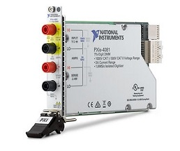

pylab_ml.dmm.natinst.pxie40xx.PXIe40xx
- class PXIe40xx(addr=None, identify=False, instName=None)[source]
Bases:
NatInstInterface to the Digital Multimeter (DMM) NI PXIe-40xx (e.q. 4081).

- Date:
April 28, 2026
- Author:
Semi-ATE <info@Semi-ATE.org>
todo:
| in work | only base functions implemented | for more properties or functios see: https://nimi-python.readthedocs.io/en/master/nidmm.html | call the misssing function with dmm.inst.functionname
The PXI-4081 can measure voltage and current precisely
- __init__(addr=None, identify=False, instName=None)[source]
Initialise.
- Parameters:
addr (string) – name from the PXI-Slot e.q. ‘PXI1Slot3’ or ‘SMU’.
identify (bool, optional) – Defaults to False.
instName (string, optional) – Instance Name from top.
- Example: Initialization
>>> dmm = PXIe41xx('PXI1Slot5',instName='dmm') # connect and initialize instrument
- Example: Current measurement
>>> i = dmm.current # measure (supply) current
- Example: Voltage measurement
>>> v = dmm.voltage # measure voltage
Methods
__init__([addr, identify, instName])Initialise.
abort()Set state from Instrument to uncommitted.
checkstate(value)Compare actual state with value and set it to value if compare false.
clear()Clear error status.
close([force])Close connection to instrument.
Close the session (=inst).
commit()Set state from Instrument to commit.
createattributes(dictionary[, parent, ...])Create attributes or methods from a dictionary.
disable()Set state from Instrument to uncommitted.
List of outstanding errors.
find_names() returns list of identifiers strings, lhs of = assignments
help()identify([showInstName])Identify message.
init([identify])Optional init for interlock startup after identification.
initiate()Set state from Instrument to running.
local()Not possible, always remote control.
measure(nsamples)Start to fetch data from the DMM.
message([message])Device has no display, message display to logger.info.
mfilter(input)mqtt_add(client, instrument[, liste, qos])Add the instrument to mqtt.
Remove the instrument from mqtt.
plot_dmm_data(time, voltage)Plot graph between Time and Voltage.
publish(topic, value)Publish topic as type='cmd' with paylad=value.
publish_get(function_name, value)Publish function_name as type='get' with paylad=value.
publish_set(function_name, value)Publish function_name as type='set' with paylad=value.
reopen_session(channels)Reopen last session with channels.
reset()Reset, and set folowing attributes.
self_cal([force])Perform self calibration if last self calibration is older than 1 day.
Set setup instrument settings.
Attributes
Get or set adc_calibration.
Specifiy the measurement aperture time for the channel configuration.
Specifiy the units of the aperture_time property for the channel configuration.
Get or set auto_zero.
Set/get channel number if the instrument have more than one channel.
commandGet current.
Get or set measurement method.
has_nidmmGet the id from the device.
Return with instname or instname[ch] if it has channels.
interchoicesSet/get the number of measurement to be carried out in a loop.
mqtt_enablemqtt_listGetter for the mqtt_status.
Get measurement from measurement method.
Set/get runningmode.
Perform the device self-test routine and return pass, otherwise raise an exception.
Set/get state, only set state if necessary.
Get voltage.
if something wrong with your called methode, than set the result to self.ATTR_ERROR
last set/get attribute name.
last set attribute value.
- ATTR_ERROR
if something wrong with your called methode, than set the result to self.ATTR_ERROR
- class Runningmode(value)
Bases:
EnumPossible Modes for state handling.
- auto = 0
handle commit, uncommit, running automatically
- man = 1
do it by yourselve
- class State(value)
Bases:
EnumPossible states for the instrument.
actual state
send command
new state
Comment
uncommitted state
commit
committed state
uncommitted state
initiate
running state
committed state
modify any property
uncommitted state
laut Beschreibung, ist das wirklich so?? es wird normalerweise immer eine exception ausglöst
running state
abort
uncommitted state
running state
commit
running state
- committed = 1
committed state
- disabled = -1
reset instrument, output switched off
- running = 2
running state
- uncommitted = 0
uncommitted state
- abort()
Set state from Instrument to uncommitted.
usually handle automatically, if runningmode==’auto’.
- property adc_calibration
Get or set adc_calibration.
AUTO = The DMM enables or disables ADC calibration for you. OFF = The DMM does not compensate for changes to the gain. ON = The DMM measures an internal reference to calculate the correct gain for the measurement.
- property aperture_time
Specifiy the measurement aperture time for the channel configuration.
Aperture time is specified in the units set by the aperture_time_units property see: http://nimi-python.readthedocs.io/en/master/nidmm/class.html#aperture-time
- property aperture_time_units
Specifiy the units of the aperture_time property for the channel configuration.
SECONDS or POWER_LINE_CYCLES.
- attrLast
last set/get attribute name.
- attrLastvalue
last set attribute value.
- property auto_zero
Get or set auto_zero.
AUTO = The drivers chooses the AutoZero setting based on the configured method and resolution.OFF = Disables AutoZero.ON = The DMM internally disconnects the input signal following each measurement and takes a zero reading. It then subtracts the zero reading from the preceding reading.ONCE = The DMM internally disconnects the input signal for the first measurement and takes a zero reading. It then subtracts the zero reading from the first reading and the following readings.
- property channel
Set/get channel number if the instrument have more than one channel.
- you can also use:
>>> vdd[0].voltage = 5 # set voltage from channel 0 >>> vdd[1].current = 0.1 # set current from channel 1 >>> v = vdd[1].voltage # measure voltage from channel 1
- checkstate(value)[source]
Compare actual state with value and set it to value if compare false.
- Parameters:
value (
NatInst.State) – expected status.- Return type:
None.
- clear()
Clear error status.
- close(force=False)
Close connection to instrument.
- close_session()
Close the session (=inst).
- commit()
Set state from Instrument to commit.
usually handle automatically, if runningmode==’auto’.
- createattributes(dictionary, parent=None, child=None, childname='')
Create attributes or methods from a dictionary.
syntax from the dictionary see example in the class documentation.
- Parameters:
dictionary (dict) – {attribute/methode name : (Device command for read/write) , range, call functions}.
- Returns:
None.
- property current
Get current.
- disable()
Set state from Instrument to uncommitted.
usually handle automtically, if runningmode==’auto’.
- error_list()
List of outstanding errors.
- find_names()
find_names() returns list of identifiers strings, lhs of = assignments
- property function
Get or set measurement method.
DC_VOLTS = DC VoltageAC_VOLTS = AC VoltageDC_CURRENT = DC CurrentAC_CURRENT = AC CurrentTWO_WIRE_RES = 2-Wire ResistanceFOUR_WIRE_RES = 4-Wire ResistanceFREQ = FrequencyPERIOD = PeriodTEMPERATURE = tempearture, NI 4065, NI 4070/4071/4072, and NI 4080/4081/4182 supported.AC_VOLTS_DC_COUPLED = AC Voltage with DC CouplingDIODE = DiodeWAVEFORM_VOLTAGE = Waveform voltageWAVEFORM_CURRENT = Waveform currentCAPACITANCE = CapacitanceINDUCTANCE = Inductancesee https://nimi-python.readthedocs.io/en/master/nidmm/class.html#function
- property id
Get the id from the device.
- identify(showInstName=False)
Identify message.
- init(identify=False)
Optional init for interlock startup after identification.
- initiate()
Set state from Instrument to running.
usually handle automatically, if runningmode==’auto’.
- property instName
Return with instname or instname[ch] if it has channels.
- json = <module 'json' from '/home/runner/miniconda3/envs/test/lib/python3.9/json/__init__.py'>
- local()
Not possible, always remote control.
- measure(nsamples)[source]
Start to fetch data from the DMM.
- Parameters:
nsamples (int) – Number of Data-points to fetch.
- Returns:
time (list) – Contains list of Time values..
voltage (list) – Contains list of Voltage values..
- property measurecnt
Set/get the number of measurement to be carried out in a loop.
TODO: this function is not running yet, it is only a dummy
if the result == None than this function not implemented. The return value for the measurement is calculated togetheer with the mfilter setting.
- message(message=None)
Device has no display, message display to logger.info.
- mqtt_add(client, instrument, liste='#', qos=0)
Add the instrument to mqtt.
calling from base_instrument, after the instrument (device) has been create. Normally you have not to use this function, only base_instrument use it.
- Returns:
None.
- mqtt_disconnect()
Remove the instrument from mqtt.
calling from base_instrument, if the instrument are closing. Normally you have not to use this function, only base_instrument use it.
- Returns:
None.
- property mqtt_status
Getter for the mqtt_status.
- plot_dmm_data(time, voltage)[source]
Plot graph between Time and Voltage.
- Parameters:
time (list) – Input a list of Time values for x-axis..
voltage (list) – Input a list of Voltage values for y-axis..
- Return type:
None.
- publish(topic, value)
Publish topic as type=’cmd’ with paylad=value.
- publish_get(function_name, value)
Publish function_name as type=’get’ with paylad=value.
- publish_set(function_name, value)
Publish function_name as type=’set’ with paylad=value.
- property read
Get measurement from measurement method.
- reopen_session(channels)
Reopen last session with channels.
- reset()[source]
Reset, and set folowing attributes.
power_line_frequency = 50.0
aperture_time_units = POWER_LINE_CYCLES
aperture_time = 2
inst.auto_zero = OFF
dc_noise_rejection = SECOND_ORDER
- property runningmode
Set/get runningmode.
- self_cal(force=True)
Perform self calibration if last self calibration is older than 1 day.
- Parameters:
force (TYPE, optional) – if force==True -> perform self calibration independent from last calibration. The default is True.
- Returns:
None.
gives information about the calibration
- property selftest
Perform the device self-test routine and return pass, otherwise raise an exception.
After selftest the device is in reset state.
- Returns:
result – state from selftest.
- Return type:
bool
- property state
Set/get state, only set state if necessary.
- property voltage
Get voltage.